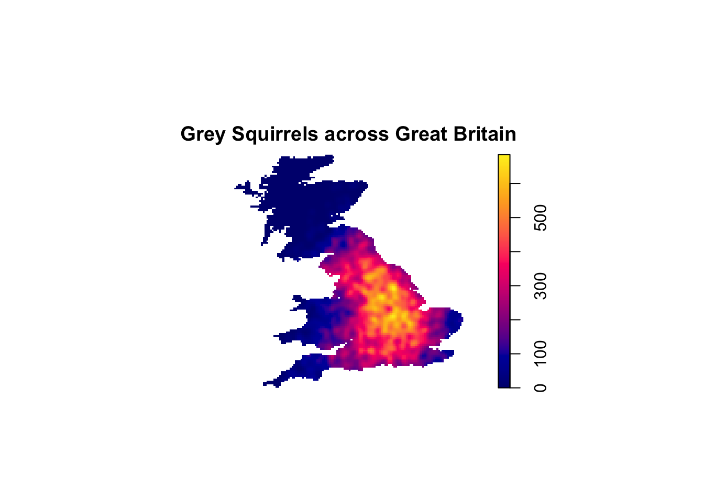
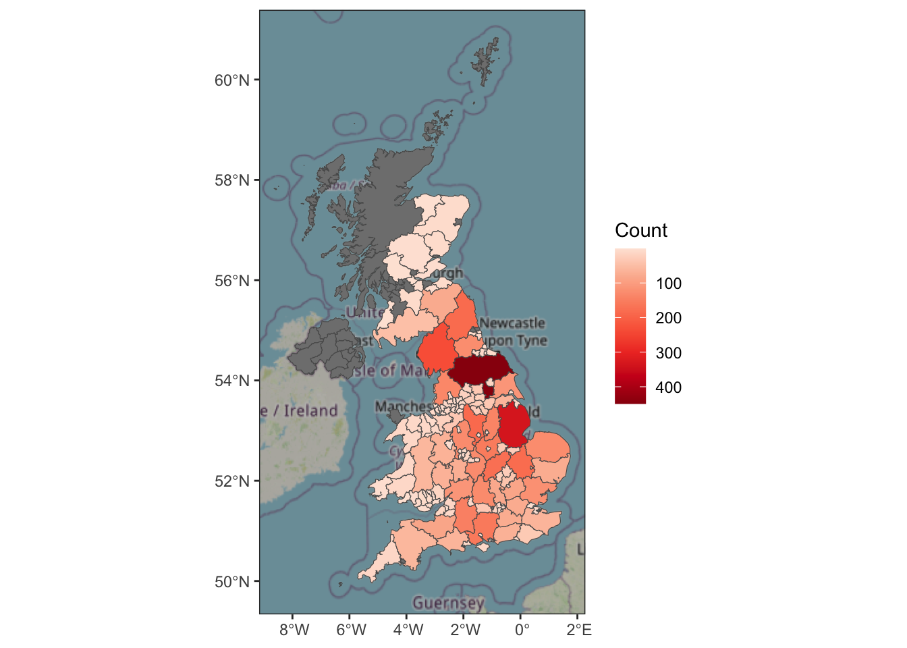
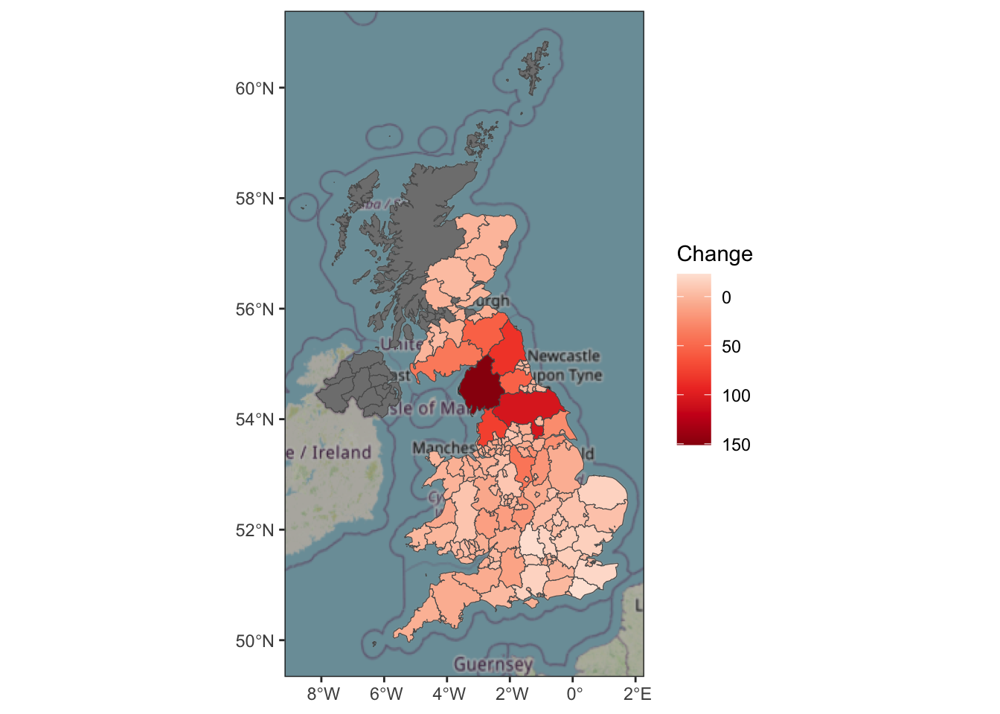

library( dplyr )
library( ggplot2 )
library( tidyr )
library( sf )
library( ggspatial )
library( prettymapr )
library( spatstat )
library( raster )MA22019 2025 - Solutions for Homework 9
Mise en place
Homework
Solutions
You may want to load the following packages before starting the exercise:
When working on a University PC, you will have to first install some of these packages.
Homework Question - Tracking grey squirrels across the UK
The grey squirrel is classified as an invasive species in the UK, and it has displaced the native red squirrel across large parts of the UK. A wildlife conservation charity has collected data on reported sightings of grey squirrels for 2020-2022. The data they provided includes the following:
GreySquirrels.csv: Sightings of grey squirrels reported to the wildlife conservation charity for 2020-2022:
Year: Year the sighting happened
Lon: Longitude coordinate of the sighting
Lat: Latitude coordinate of the sighting
Admin: Name of the administrative area, where the grey squirrel was sighted
UK Shapefile: Folder containing shapefiles for the UK
UK.shp: Shapefile without administrative boundaries
UK admin.shp: Shapefile with boundaries for the administrative areas named in the file “GreySquirrels.csv”
The charity assured us that the data is representative of the spatial distribution of squirrels across Great Britain for all years. They ask you to use the data to investigate the following aspects:
What can we say about the spatial distribution of grey squirrels across Great Britain in 2022?
Are there any areas of Great Britain that saw a notable change in the number of grey squirrels when we compare the data for 2020 and 2022?
We start by loading the data and the shapefiles
UK <- read_sf( "Data/Shapefiles/UK_Shapefile/UK.shp" )
UK_county <- read_sf( "Data/Shapefiles/UK_Shapefile/UK_admin.shp" )
Squirrels <- read.csv( "data/GreySquirrels.csv" )To explore the spatial distribution of the grey squirrel for 2022, we extract the relevant observations
Squirrels2022 <- filter( Squirrels, Year == 2022 )Since we are working with point pattern data, we use techniques for analyzing point pattern data and create a ppp object
UK <- st_reverse( UK )
Squirrels2022_ppp <- ppp( Squirrels2022$Lon, Squirrels2022$Lat, poly = UK$geometry[[1]][[1]] )Warning: 11 points were rejected as lying outside the specified windowNote: Some of the points are lying outside the area, because we only took the largest polygon. The omission of these few points will not affect our results due to there being about 10,800 observations in the data.
We can now use the smoothed kernel intensity function to explore the spatial distribution
lambdaC <- density.ppp( Squirrels2022_ppp, edge=TRUE, sigma=0.1 )
plot( lambdaC, main="Grey Squirrels across Great Britain" )
The plot suggests that the highest density of grey squirrels can be found in the East Midlands, with a high intensity observed throughout England (except for Cornwall and Devon). On the other hand, we hardly observe any squirrels in West Wales and Scotland.
To measure the change in numbers, one option is to focus on the administrative areas and calculate the number of grey squirrels for 2020 and 2022 for each of them
Squirrels_county <- Squirrels %>%
count( Year, County ) %>%
filter( Year %in% c(2020,2022) ) %>%
rename( Count = n ) %>%
ungroup()Let’s visualize the counts within each administrative boundary
Squirrels2022 <- filter( Squirrels_county, Year == 2022 )
UK_county <- full_join( UK_county, Squirrels2022, by=c("NAME_2"="County") )
ggplot( UK_county, aes(fill=Count) ) +
annotation_map_tile(zoom=5) +
theme_bw() + geom_sf() +
scale_fill_distiller( palette="Reds", trans="reverse" )
We see that North Yorkshire had the highest count in 2022, although it was not the area with the highest intensity - these differences are due to the different areas sizes.
The next step is to calculate the raw change in numbers for each administrative boundary
Squirrels_county <- Squirrels_county %>%
pivot_wider( names_from = Year, values_from = Count ) %>%
mutate( `2020` = replace_na(`2020`,0), `2022` = replace_na(`2022`,0) ) %>%
mutate( Change = `2022` - `2020` )Finally, we visualize the calculated numbers:
UK_county <- UK_county %>% full_join( Squirrels_county, by=c("NAME_2"="County") )
ggplot( UK_county, aes(fill=Change) ) +
annotation_map_tile(zoom=5) +
geom_sf() + theme_bw() +
scale_fill_distiller( palette="Reds", trans="reverse" )
We find that the areas that had the largest change in raw numbers are all located in northern England, in particular Cumbria saw a big increase in the number of grey squirrels.